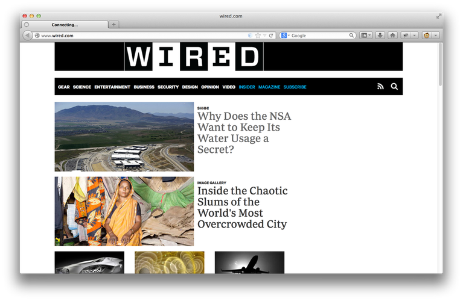
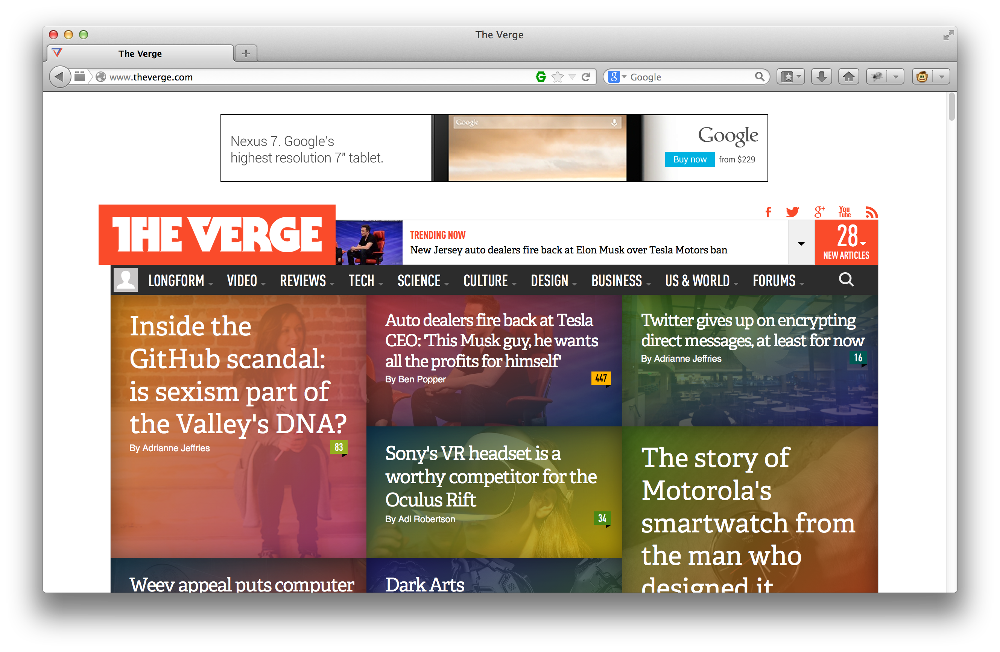
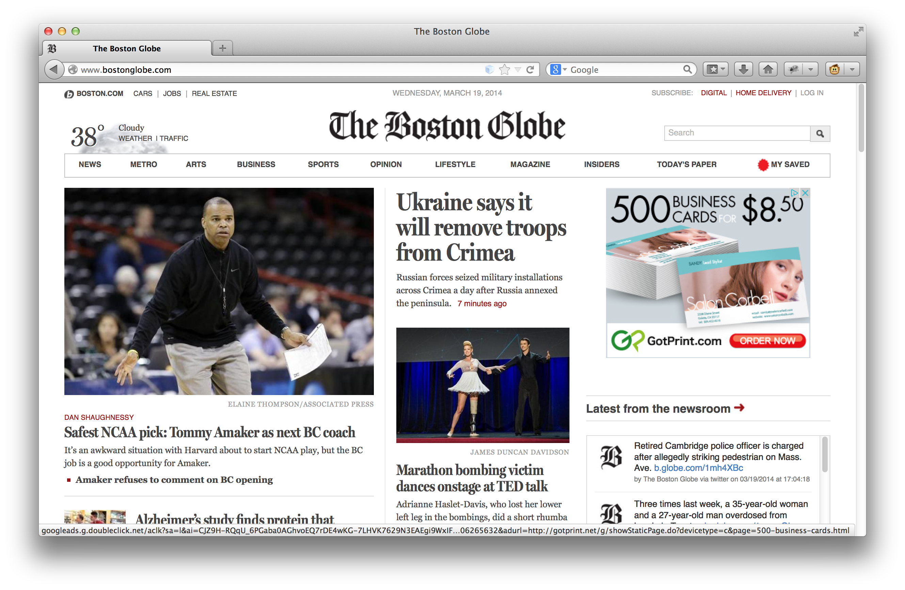

Planning a Drupal
Migration

March 19, 2014
About Me
Will Long
 @Kerasai
@Kerasai Kerasai on D.O
Kerasai on D.O- http://kerasai.com
Objectives
- Highlight strategies for assessing source content
- Cover concepts for rebuilding a site in Drupal
- Identify other considerations for a rebuild
Agenda
- Analyzing an existing site
- Rebuilding in Drupal
- Special Considerations
Why Migrate
Major releases upgrades have been challenging.
Drupal is in demand.
The official Drupal 8 upgrade path is a Migrate operation.
Analyzing Content Sources
- The existing site is a starting point
- Use navigation elements and sections
- Analyze content structure
Example Source

http://www.wired.com/Example Source

http://www.theverge.com/Example Source

http://bostonglobe.com/Rebuilding in Drupal
Build the data model using content types and fields.
Adjust content as desired as it's moved in.
Rethink functionality of the site.
Other Considerations
Preserve/adjust content URLs
Linking between content
File assets
Other data